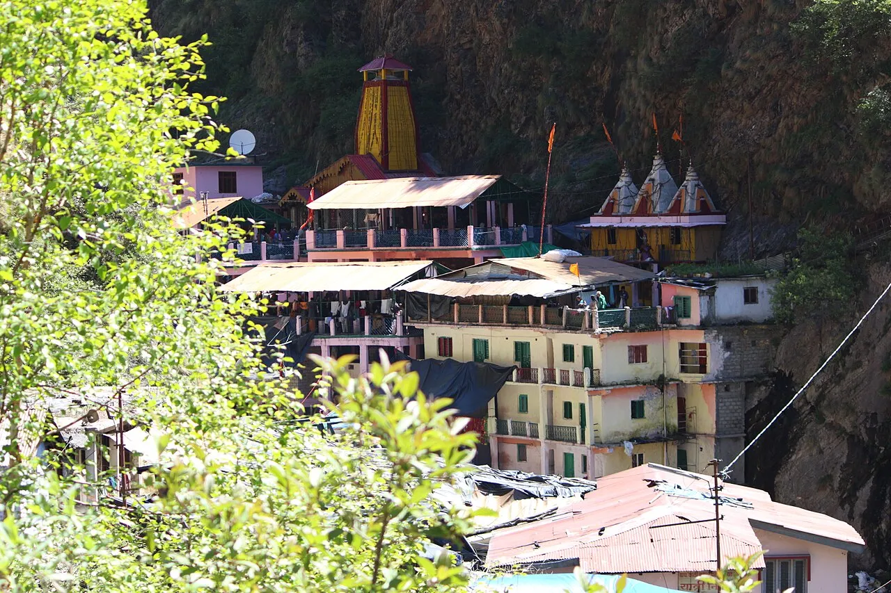
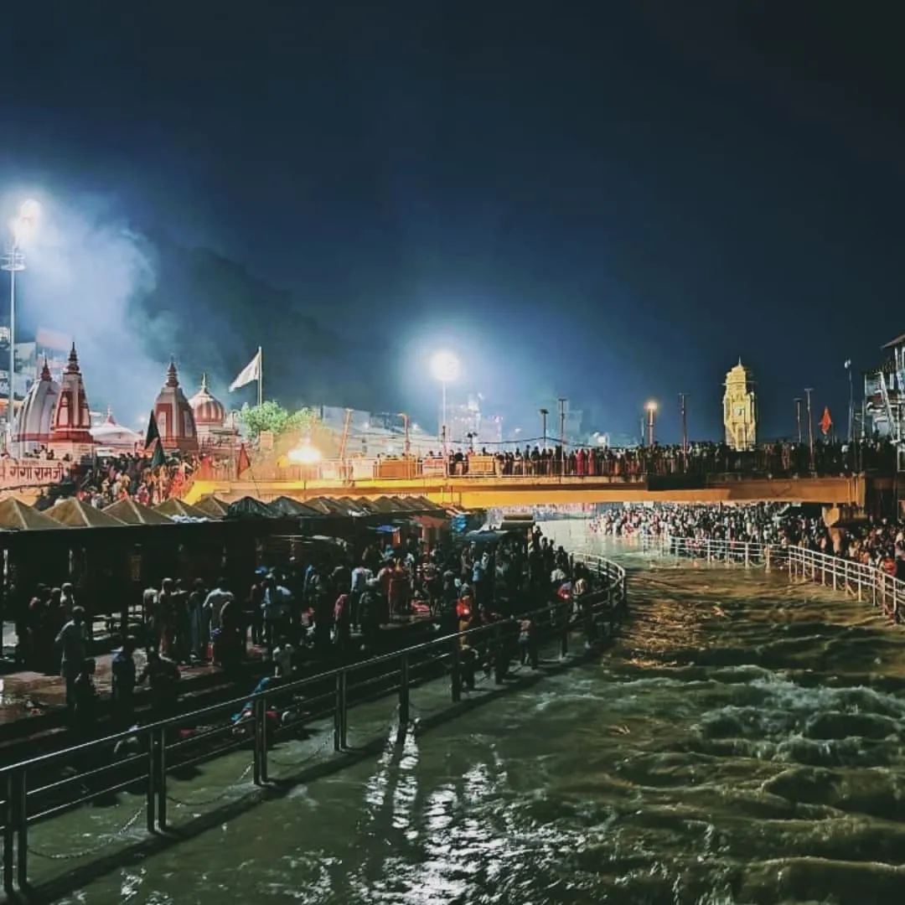
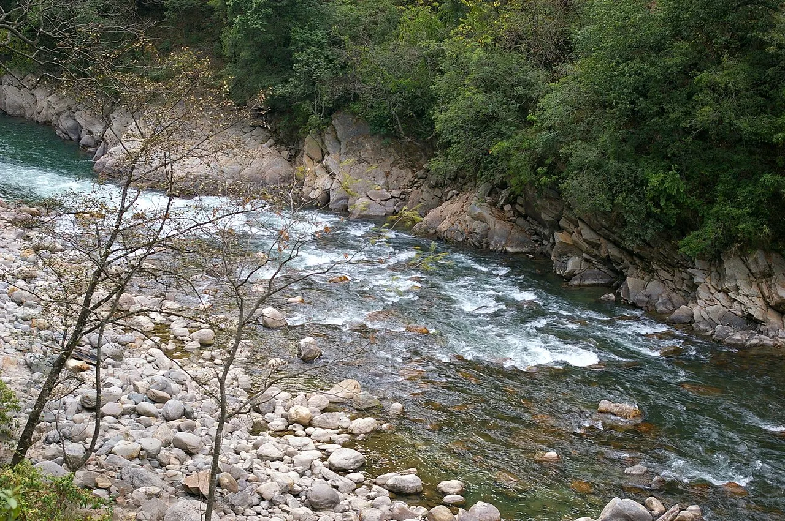
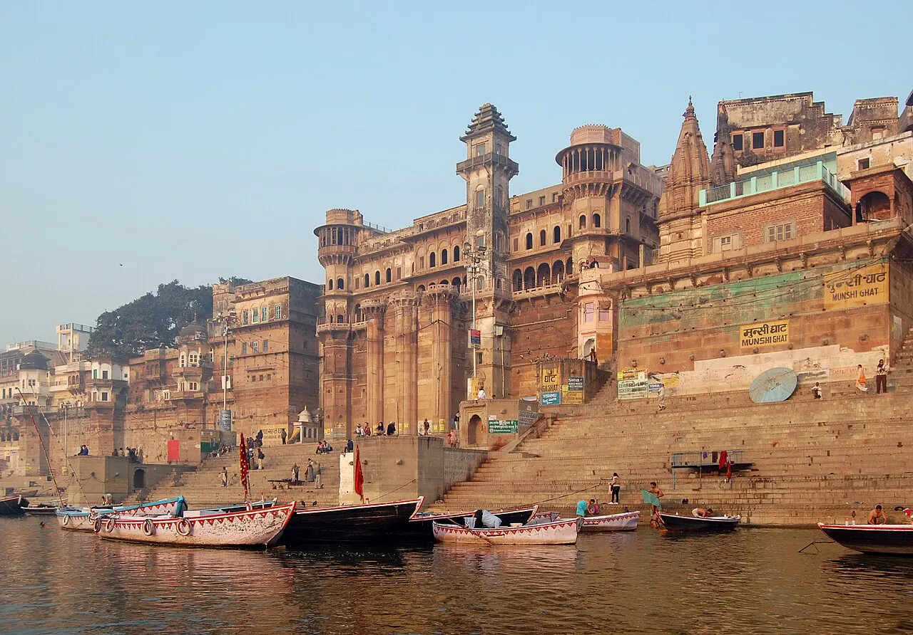
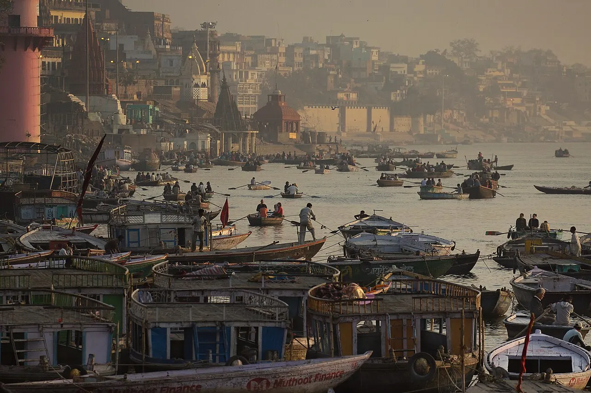
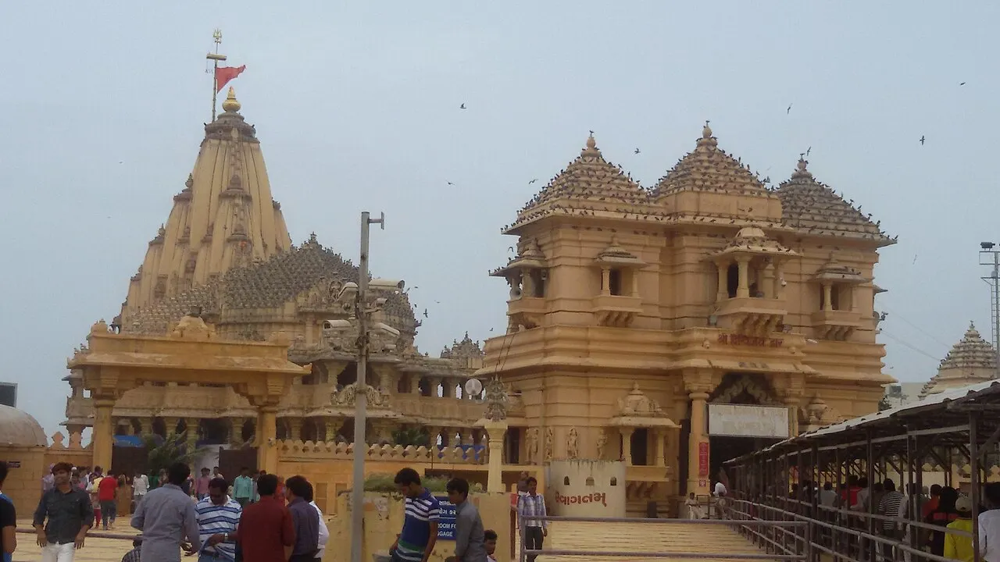
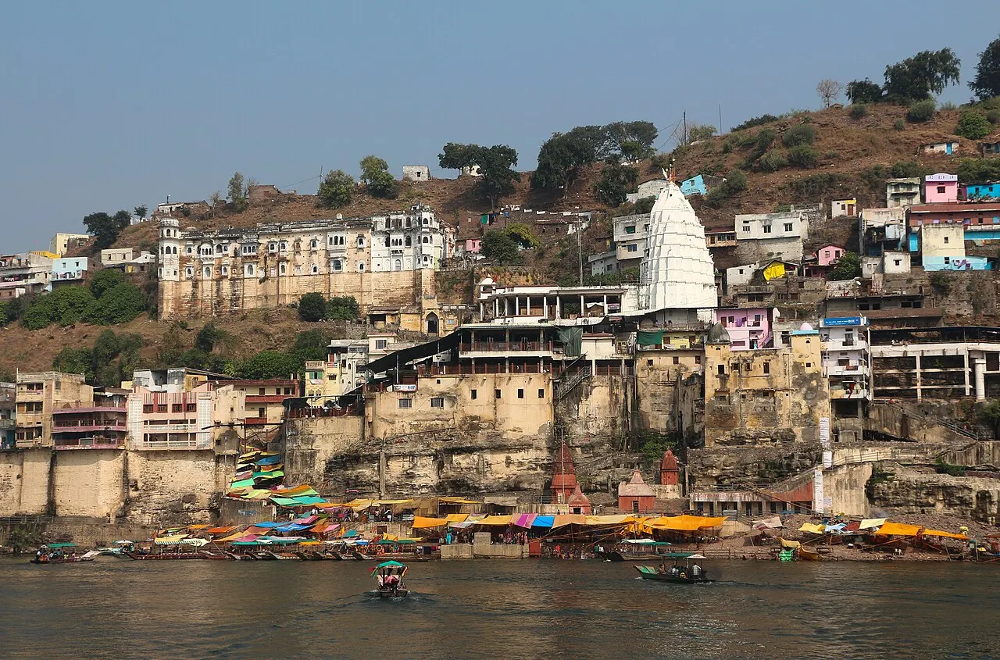
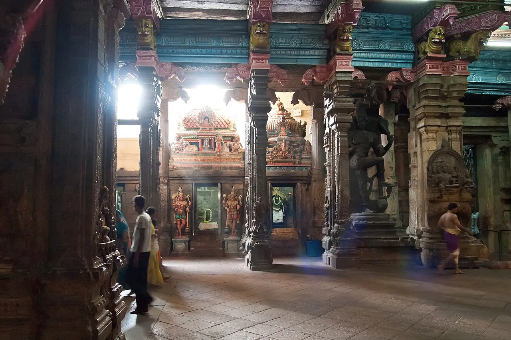
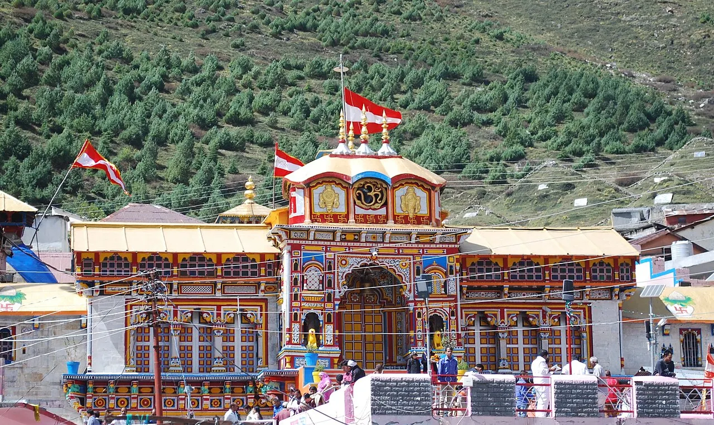

Made for your kind of journey
Pilgrimage journeys
Discover routes worth travelling. Choose a destination, explore a day-by-day itinerary and ask us to tailor the details to you.
Find your next escape
Showing 9 of 9 tours
No matching tours. Try another destination or reset your filters.








Chardham Family Assistance Tour
Haridwar • Yamunotri • Gangotri • Kedarnath • Badrinath
View itineraryAll itineraries are planning suggestions. Prices, accommodation, activities and availability require a written quotation. No departure is guaranteed.